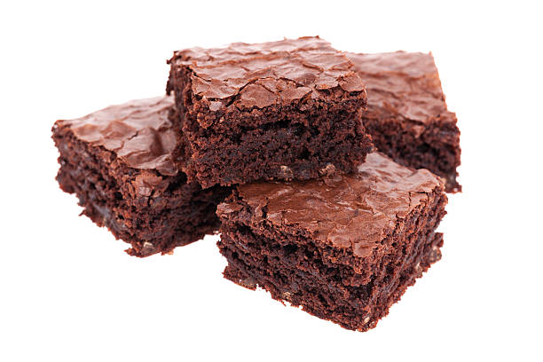

Vegan Brownie

Delicious brownies you can make today!
This is a simple to follow, straight-forward recipe on how to make
vegan brownies, perfect for holidays and events with
various food sensitivities!
Ingredients:
- 2 cups all-purpose flour
- 2 cups granulated white sugar
- 3/4 cups unsweetended cocoa powder, sifted
- 1 teaspoon baking powder
- 3/4 teaspoon salt
- 1 cup hot coffee
- 1/2 cup vegetable oil
- 2 teaspoons vanilla extract
Directions
- preheat oven to 350F (175C)
- Grease a 9x13 inch baking dish
- Whisk flour, sugar, cocoa powder, baking powder, and salt together until combined
- Pour in coffee, vegetable oil, and vanilla; mix until well-blended
- Spread batter evenly in the prepared dish
- Bake in oven until top is no longer shiny and center feels just set when gently pressed, about 30 min
- Let cool at least 10 min
Original recipe
Go To Home Page